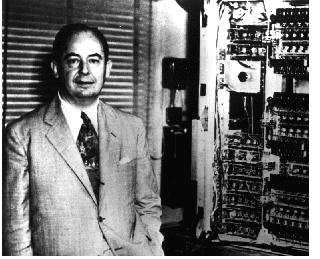
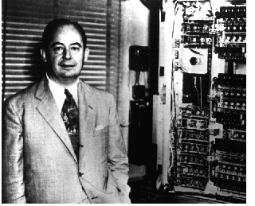

A Short Introduction
 


John von Neumann was an unparalleled genius.
He was not purely a Computer Scientist, although he was one of the people who could be first labelled as such.
Von Neumann discovered pioneering concepts in fields as broad as mathematics, computer science, genetics, quantum physics, economics, weather prediction, and nuclear weapons. He was a Polymath in every sense of the word. His mind could grapple with the most complex problems in any field.
He showed signs of genius from an early age. His parents remembered that he mastered Classical Greek as a boy: famously telling jokes in the language from an early age.
Nobel Laureate Hans Bethe said of von Neumann: "I have sometimes wondered whether a brain like von Neumann's does not indicate a species superior to that of man”.
Long story short, to try to sum up in a single website such a free range mind that made such an impact on the world, is incredibly stupid, but I will try.
Video
Here is a video that I found quite helpful in learning about John von Neumann:
John von Neumann & Early Computing
The architecture of modern computers is arguably John von Neumann's most impactful legacy.
Following the work of Charles Babbage and Ada Lovelace, John von Neumann was intrumental in the design of early computers.
He was a key member of the team that created what is now known as Von Neumann Architecture: an architecture in which programs are stored within the computer itself instead of externally.

Computers prior to von Neumann's Stored Program architecture were single purpose machines. To use a modern analogy, they could be calculators or photo editors but not both. Reprogramming computers meant rebuilding them physically, which limited the number of problems computers were used to solve. More importantly however, it meant that reprogramming computers took months which capped the speed at which advances could be made in the emerging field
Von Neumann Architecture changed that by storing digital instructions for the computer in memory. As a result, John Von Neummann helped to make computers General Purpose: the characteristic that ensured computers would eventually revolutionise nearly all aspects of modern life.
More importantly at the time however, Von Neumann architecture meant that computers could be reprogrammed and debugged in days rather that weeks. This ensured that computer scientists, physicists, and other early users of computers would make progress much faster.
In addition to the advances von Neumann made in computer architecture, his background in Mathematics also enabled him to make early breakthroughs in algorithms that underpin key computational models to this day.
For example, in 1945 he invented the Merge Sort Algorithm in order to sort unlinked data. This was important because data structures like Arrays do not sit next to each other in a computer's memory. As a result, being able sort such inlinked data structures was critical in allowing early programmers to take advantage of useful data structures like arrays.